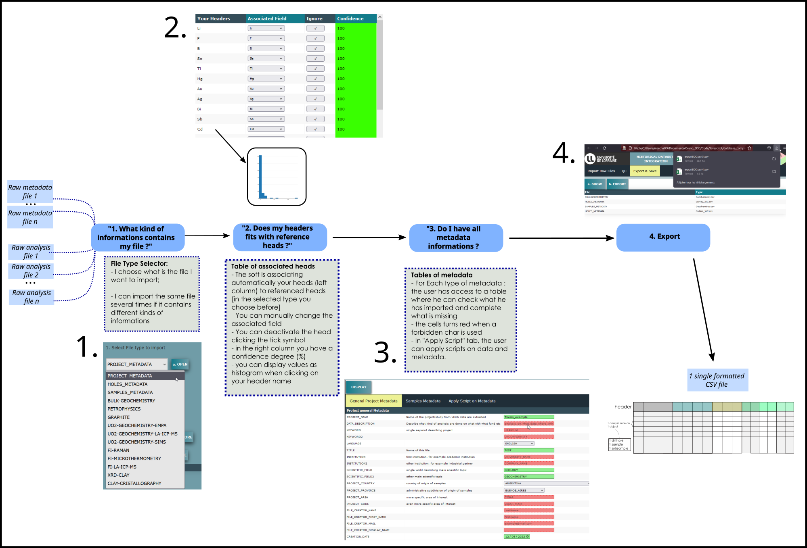

Link to Tutorial playlist on youtube
Check out
All tutorials about JODEL
.
Data integration using Historical Integration Page
General Process of data integration

Import Data
Quality Check
Export & Save
Data vizualization using JODEL Page